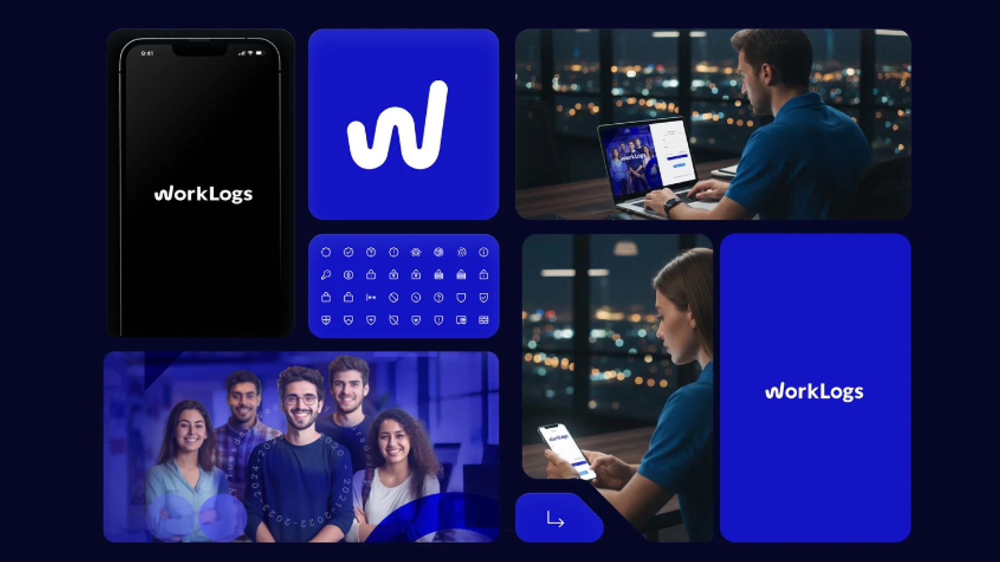

Kommit V5 Design System
El sistema de diseño que unifica la marca y el producto digital de Kommit: tokens, component library, documentación y gobernanza. Lideré desde la estrategia hasta la gobernanza, no solo el diseño visual.
Visitar sitio
El sistema de diseño que unifica la marca y el producto digital de Kommit: tokens, component library, documentación y gobernanza. Lideré desde la estrategia hasta la gobernanza, no solo el diseño visual.
Visitar sitioKommit crecía con equipos distribuidos y herramientas internas que no compartían lenguaje visual: cada producto reinventaba componentes, la marca se aplicaba de forma inconsistente y el handoff entre diseño y desarrollo perdía tiempo en decisiones ya tomadas.
Como Lead Designer, mi encargo fue convertir esa fragmentación en un sistema: una sola fuente de verdad para marca, componentes y decisiones de interfaz, que cualquier equipo pudiera usar sin pedir permiso al diseñador.

Estructuré el sistema en capas: design tokens (color, tipografía, espaciado), component library en Figma con estados y variantes, y guidelines de accesibilidad y uso. La marca V5 y el producto comparten la misma base, así una decisión se toma una vez y escala a todo.


El sistema es la base de las herramientas internas de Kommit — el portal de equipo, Worklogs — y de la comunicación de marca. Definí cómo se proponen, revisan y versionan cambios al sistema, para que evolucione con los equipos en lugar de romperse con cada necesidad nueva.

Los equipos dejaron de reinventar componentes y las inconsistencias visuales entre productos desaparecieron. El handoff a desarrollo se apoya en documentación y tokens en lugar de conversaciones repetidas, reduciendo los ciclos de feedback entre diseño y desarrollo.
Siguiente proyecto